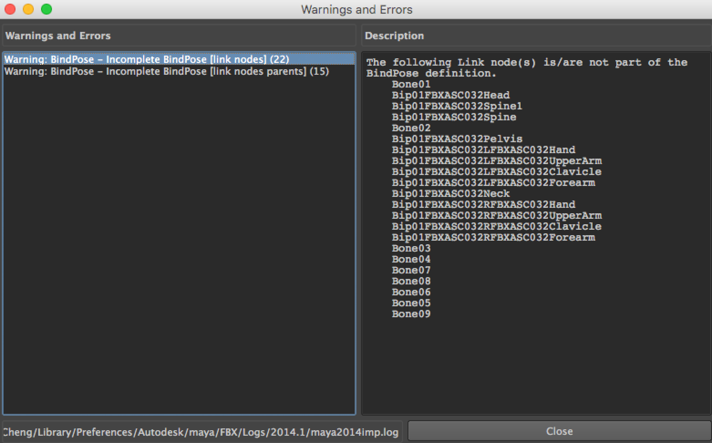
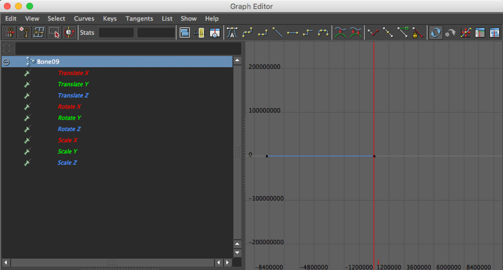

FBX 导入丢失动作
2018-10-5
在把一个 FBX 动作模型导入 Unity 之后，发现部分骨骼的动作缺失了，一开始没有注意到 Unity 的 Error 信息（习惯新的 clear 掉了一大堆打印信息），以为是 Maya 导出时的设置有问题，在 Maya 中看到一条 Warning，根据 Warning 的信息找了很久未果。

其实在使用 Maya 打开这个文件的时候就有异常，文件内容本身不多，Outliner 结构也很简单，可是打卡文件会卡顿很久。
当再次导入 FBX 时看到一条 Unity 的 Error 信息。
ImportFBX Errors:
Time range (447397) for rotation curve(s) on node 'Bone09' on take 'Take 001' larger than maximum allowed (100000). These curves won't be imported. Check your file - it most likely has keys in far negative or positive timeline.
Time range (447397) for scale curve(s) on node 'Bone01' on take 'Take 001' larger than maximum allowed (100000). These curves won't be imported. Check your file - it most likely has keys in far negative or positive timeline.
Time range (447397) for scale curve(s) on node 'Bone09' on take 'Take 001' larger than maximum allowed (100000). These curves won't be imported. Check your file - it most likely has keys in far negative or positive timeline.
Time range (447397) for translation curve(s) on node 'Bone01' on take 'Take 001' larger than maximum allowed (100000). These curves won't be imported. Check your file - it most likely has keys in far negative or positive timeline.
Time range (447397) for translation curve(s) on node 'Bone09' on take 'Take 001' larger than maximum allowed (100000). These curves won't be imported. Check your file - it most likely has keys in far negative or positive timeline.
Time range (447399) for rotation curve(s) on node 'Bone01' on take 'Take 001' larger than maximum allowed (100000). These curves won't be imported. Check your file - it most likely has keys in far negative or positive timeline.Google 后查到了解决方法，https://answers.unity.com/questions/372425/error-importing-fbx.html。于是在 Maya 中选中对应的骨骼，打开 Graph Editor 检查。确实在时间轴的负方向很远的地方有动作信息。

将这些动作信息删除后就解决了动作缺失的问题了，同时 Maya 的 Warning 和打开文件卡顿也消失了。